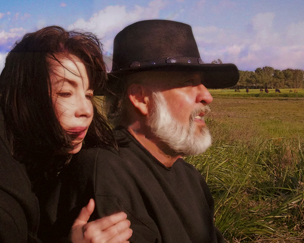

|
Your earlier interviewers, such as Janice M. Bostok and Susumu Takiguchi, displayed a natural curiosity about the why-and-wherefore of your high profile in haiku in the 1970s, your departure from the literary scene, and your re-emergence twenty years later. The reasons that you
offered for your silence were eminently practical, not at all mysterious, and perhaps you can recount them briefly for our readers here.
At that time, the mid-1970s, I'd published my first haiku and senryu collection, Light Run, and my first tanka collection, Man with No Face. Maya collected most of my best haiku and senryu written between 1968-1975. One book, Jesus Leaving Vegas, was a long hybrid renga written with Virginia Brady Young and Scott Poulter, who ran Shelters Press out of Milwaukee. I'd completed all my essays in "The Liberated Haiku" series, landed a large number of poems in Cor van den Heuvel's now famous The Haiku Anthology, and was working as assistant editor on Modern Haiku with Kay Titus Mormino while publishing my own senryu journal, Seer Ox, and chapbooks by other poets under that imprint—Alan Pizzarelli, Martin Shea, Gary Hotham. I'd gone to New York City and read my poems over the air at the Pacifica Radio station there, read my work at Japan House, and saw a few of my "Tales of Kwatz" prose pieces published in The Village Voice. All my friends in the haiku world at that time I'd met—Eric Amann, Anita Virgil, Elizabeth S. Lamb, Janice Bostok, William J. Higginson, Alan Pizzarelli, Virginia B. Young, John and Marlene Wills (marlene mountain),
et al. I'd finished four years at Occidental College in Los Angeles with two
degrees, one in Asian studies and one in English and American literature. All things looked good on that side of life.1
But I was an educated young man still working lousy part-time jobs that I
couldn't stand, living in a dark basement apartment (the walls were actually
painted a flat black) with absolutely no prospects for "employment," that
euphemism we use for that way of obtaining reliable resources for the three nuns of earthly life: food, clothing, and shelter. It dawned on me that I needed to get a real job. It dawned on me that what kind of job I got was something I might take some interest in, make a few choices about on my own behalf, exercise my will. I remember fortifying my resolve with some very bad books on the spirit of bushido, and re-reading Mishima's novels. I got a full scholarship with a stipend to attend graduate school at the University of Southern California.
In summary, I didn't have to worry about writing my next haiku or tanka or
whatever. I gave the greater part of my time to my work in the field of public libraries, stayed with it for twenty-five years. When I could, I spent my evenings and weekends in quiet, uncomplicated pursuit of my own poetry, reading, and study. I had beaten back the addiction to the routines and compulsions of "write and publish."
In discussing your public withdrawal with Jan Bostok, you stated, "And I have to say that going my own way with the haiku and tanka, in isolation like that, did in fact give me a sense of freedom that I relished. No one was looking over my shoulder. I was unencumbered by either approval or disapproval, or the need to explain or defend or advocate anything at all
. . . ." Perhaps many of our readers will understand this sense of liberation that you experienced. What interests me, Michael, is how, in your opinion, this self-imposed silence profited your mature work.
For the benefit of my work, I think, I learned to be a better observer, to watch and listen more carefully to what others had to say, and to what the world was saying, during those years. I produced a lot of material. Since around 1998, much of it has started to appear; I have gone over it, finished what seemed worthwhile, harvested the ideas and sketches that seem to fit best with my new work and themes and interests. I have notebooks full of notes and fragments. I'm surprised to find how much needs just a little re-working, or combining and composing, to make it worth publishing or, as often happens, the basis for something entirely new.
The fifty or sixty haibun I wrote between 1998 and 2002, those four years, reflect a lot of that material. I returned to publishing during that period, as I was planning on taking my savings, my investments, and giving myself the privileges of an early retirement. Which is what I did do in 2001. I've always looked at it as a kind of self-awarded "grant" and the best kind, too, in that it involves no annual renewals, reports, or complicated and annoying applications or interviews. When I see how hard people have to work for a lousy $3000-$5000 "grant" to live someplace "free to write" for a few months, I'm incredulous that the granting foundations can find anyone willing to bother with all the rigmarole that is required to get so little money for so short a time.
Maybe most important, my writing has profited by not being destroyed as a
source of pleasure for me. Other than that, what is there to say? The record of mankind is very fickle toward the sons and daughters of its literature. We write our poems or whatever it is we choose to do, love some, suffer some, and die. We write about what happens between the beginning and end of that sentence. This is our profit. We can be sure of no other profit. We all arrive at our last destination, our final appointment, with empty pockets, don't we? So we can laugh at profit a little, I think, and get beyond the need to make that kind of calculation a basis for what we have to say and how it might be valued.
The Canon and the Mainstream
You published a two-part essay, in this year's spring and summer issues of Modern English Tanka, entitled "Tanka in Western Tradition."2 You assembled therein a small anthology of "found tanka," if you will pardon the expression, of excerpts from the canon of British and American literature which, in your view, qualify as tanka or tanka-like. It would be possible to view your selections as an appeal to "mainstream" or Western literary circles to look more closely at tanka in English. It is also possible to read your article as an invitation to tanka poets to immerse themselves in the Western canon. Would you care to elaborate or clarify?
The latter is closer to my intention with that material. Western culture appears to take a beating in tanka, haiku and related studies of Eastern arts, religion, and philosophy. But it's just an appearance. R. H. Blyth's great book, Zen in English Literature and Oriental Classics, reveals, I think, that a convergence of thought and feeling are possible.3 The routes taken, the roads and channels traveled, are different but comparable. There are some shared destinations; we arrive at the same inn, so to speak, and we take the same comforts there even though we end the night sleeping in different beds, in different rooms, and may have different itineraries to pursue when we wake in the morning. That is how I see it. There are no fundamental reasons for conflict—the aesthetic conflicts appear to me to be superficial, a difference in costume, not a difference in the actual body beneath the clothes we drape over ourselves.
Let me say just a bit more here. As far as the "mainstream" goes, and as far as that term really means anything at all that is discernible and coherent, the haiku and tanka communities have been wise not to concern themselves too much with it.
Haiku and tanka have avoided being co-opted by specious "mainstream"
priorities, fashions, and fads, and by all the politics and chest-pounding that goes on between its many thousands of bickering and competing tribes, tribal settlements, and over-praised and adulated, self-perpetuating personalities and their circles. Without these distractions, haiku, tanka and related poets, critics, editors, audiences, et al, have been able to "stick to the knitting" and build their own strong, comparatively well-focused infrastructures. The proof is in the long life and products of the "movement," which is still going strong after fifty years and is, in fact, not really a movement any longer but a real cultural presence in our literature. Our comparative smallness, if that is really fair to say, is one of our strengths. We have been creating our own literature and history while the
"mainstream" has been stumbling over itself to create the next bogus "wave" of mostly unreadable goop, unmemorable poetry, and a totally de-constructed, destroyed critical apparatus. What's left is only partially understood, and then only by a few of those who helped create some small piece of the mess.
In contrast, I think haiku and tanka poets, with their critics and apologists, have created a literature that can actually be read, understood, and enjoyed by most people most of the time, inside and outside its community of writers. And as far as the "canon" of our literature is concerned, that doesn't belong to the "mainstream." The canon belongs to all of us. And I really do think, for the reasons I've outlined briefly, more tanka poets should lay claim to it and make special uses of it that are consistent with the artistic ethos and aesthetics of tanka.
Coming to the San Joaquin
Our interest here is chiefly haibun but you are President of the Tanka Society of America, a poet accomplished in haiku, tanka, senryu and other forms. Before shifting to our main focus, perhaps you can tell our readers about your recent collection of tanka, Meals at Midnight, and also address, if you will, any plans you may have to collect your poetry, including early and out-of-print volumes.
Meals at Midnight comes directly out of the material in the previous collection, Letters in Time, and is a continuation of some of the narrative elements and themes found in that book.4 Letters in Time is a collection of sixty tanka and haiku about a lot of things, but the main narrative thread is about finding the love of my life, Karen Jeanne Harlow. We met through a mutual friendship with the poet Luis Omar Salinas.5 Karen had sent out word that Salinas was gravely ill and possibly dying. I went up there to see him at the Community Regional Hospital in Fresno. I figured I was too late, that he was past help. I had been a devoted reader of his work for twenty years.
In a personal and emotional sense, I never left the San Joaquin Valley after that. Salinas recovered from that immediate episode and I married Karen.
Salinas spent his remaining years in and out of hospitals and extended care
facilities, but he still wrote and Karen and I continued to help him in any way that came to hand. Sometimes that meant just keeping him supplied with pens and paper. Often it meant taking him to the Kern Poetry readings each month at a popular downtown Fresno coffee shop, where he loved to read from his work and sit out in the night air. After a long struggle, he passed away in 2008.
Meals at Midnight is about my life with Karen during that whole period, my new life in the San Joaquin Valley. Sketches from the San Joaquin is a chapbook of forty one haiku written during this same time, but covering my relationship to the Valley since childhood. It will be published by Turtle Light Press this spring.6
Sure, there may be opportunities to reprint or do new editions of early and outof-print work. But for now I'm concentrating on more new collections, like Letters in Time and Meals at Midnight, bringing together all my uncollected and new poetry, essays, haibun, and other writing. I've got two new collections ready right now.
Tale of "The Noodle Sutra"
Did you first write haibun in the privacy of your retirement from the literary scene or did you adopt the genre later, with your public reappearance?
I've always written haibun, Jeffrey, from the beginning, the late 1960s and '70s. Barbara Unger discusses them in her book, Haiku in English, and two of them in some detail, "Solstice" and "Los Angeles." She compares and contrasts them with the prose of Jack Kerouac and the polyphonic prose of Amy Lowell.7 She found Kerouac's prose more spontaneous, and thought mine was more carefully constructed and poetic. In comparing and contrasting my haibun to Amy Lowell's prose experiments, Ungar wrote that she found mine " . . . more successful, because of the alternation of these prose passages with haiku, which provides a sharp focus and a contrast for the prose. His prose also benefits from his use of certain haiku techniques: the imagery is at once sharp, crystal-cut, and suggestive, and not a superfluous word is included."
You can imagine, can't you, how all that praise went to my head! But this is the truth: I did not see or read Ungar's book until a copy of it was sent to me some twenty years after it was published by Stanford University Press in 1978, as part of their Honors Essay in Humanities series. Ungar was a student of Makoto Ueda.
I believe that a perception exists, in haiku and tanka circles, that you have abandoned haibun. Haibun Today has recently posted many of your older haibun. Are you still writing or planning to write haibun in the future? For that matter, and because you are an accomplished tanka poet, do you entertain any thoughts of composing tanka prose?
After that first body of fifty or sixty haibun I mentioned earlier, I felt I had done with haibun more or less what I wanted to do, at least for the time being.
What has drawn me away from haibun for awhile has been involvement with tanka and related poetry. In 2002 an opportunity materialized with Red Moon Press to work with others to create an anthology of contemporary English language tanka, covering a few decades of work. The result was The Tanka Anthology, published in hardback in 2003, and still in print and available.8
Is there any distinction to be made, in your mind, between the poet and the writer of haibun or do you see haibun, despite its prose component, as a form of poetry?
I do see haibun as a form of poetry. "Prose-poetry" works for me as a simple, useful term. Some time ago, I wrote a piece called "The Noodle Sutra." It was a haibun composed only of one-syllable words arranged one word at a time in one long vertical column, with utterly no visual cue or other obvious distinction made between the prose and the poetry. It was published by Raw Nervz as an insert in one of its issues during the early 2000s (one of that magazine's last numbers).
"The Noodle Sutra" was an experiment I felt I had to do—once. It was my way of commenting on all the discussion at that time about the proper and required structure of haibun in English. I think with "The Noodle Sutra" I was attempting to demonstrate the futility of any purely abstract, critical approach to discovering haibun structure in English or any other language. It was a question for the poets or haibunists to solve, to answer, in their haibun, not in reams of useless essays and paper-war argumentation.
Generally, I think that the kind of prose we use should be appropriate to the
subject matter and consistent with the aesthetic or other goals of the piece,
whether it is haibun or what you have called "tanka prose."
Hobbles and Linking
Your assessment of haibun's potential, in your interview with Susumu Takiguchi, is particularly positive. You offered the opinion that ". . . haibun offers a kind of synoptic clarity and hybrid vigor that cannot be matched." Is your enthusiasm intact or is your current view of the matter less sanguine?
Still sanguine, my friend. But I see things that make me wonder why more have not reached out for that "synoptic clarity and hybrid vigor" I was talking about.
We seem far too stuck on Bashō's and Issa's diaries and haibun writings, as to both structure and subject matter. For instance, who says that haibun are
supposed to be a sub-category of travelogue writing? Why do so many haibun go in that direction? I think that notion completely misses, or misconstrues, Bashō's intent in writing his Oku no Hosomichi (the title is translated variously in English, as "Road to the Far North," "Journey to the Far Interior," etc.) And similarly, who says a haibun must in some sense be a diary, modeled after one of Issa's collections, or after The Tale of Genji? The work of these and other poets make wonderful models, certainly, but they shouldn't be worn like iron collars or hobbles around our ankles or knees.
Various writers have drawn an analogy between linked verse, such as renga, and the relation of prose and verse elements in haibun. Bruce Ross, for example, has written of "privileging the link." I do not know if you have ever practiced renga but you do compose tanka sequences or
sets, where the individual tanka are sometimes brought together by similar compositional principles. Do you see any relation between haibun and linked verse or haibun and the poetic sequence? Or are such comparisons dubious for you?
It seems to me that almost all writing has some process of "linking" involved in its composition. One sentence leads to and makes possible the next sentence. The first line in a poem creates the foundation and necessity for the next line. The sestet in a Petrarchan sonnet resolves or completes the thought or subject matter of the preceding octave. The couplet at the end of a Shakespearean sonnet brings to closure the preceding quatrains, which in themselves are linked by their progressive development of an idea or feeling or theme.
I am most interested in other models or patterns of linking. What can the parts of a symphony, or a sonata, or other piece of music, show us about linking? What can we learn from the way a series of framed images are linked to another series, to create a film? —And then in a film combined with a musical score? What equivalents might we find for these kinds of links in the language we use in our haibun?
Cross-breeding Conventions
Another issue frequently disputed in haibun circles is the status of the haiku: must the haiku demonstrate autonomy, that is, be presentable as a "stand alone" haiku? Or is the haiku, like the prose, only a part that is subject to the aesthetic whole (the haibun) and therefore exempt from such requirements? Or, to pose the question in yet another way, is there any reason why the haiku should be enshrined while the prose is devalued?
I can speak only to my own preferences here; there are no absolutes. I feel that the two elements, prose and poetry, need to work together, support one another, and be in harmony. I think that each haiku used in a haibun needs to be a full, stand-alone haiku, and it must contribute meaningfully and be essential to the aesthetic whole of the haibun.
Otherwise, it seems to me, the haibunist is just decorating the prose with these odd, little, dysfunctional fragments and phrases. The haiku can't be pasted on like a paper flower. And it shouldn't be left hanging out of the body of prose as if it had been torn from or detached from the prose without an aesthetic reason, or some other reason, for the separation. For harmony, the haiku must have a function, a purpose and reason for being present in the haibun—a role to play, if you will. It may be a quiet haiku, or one of those that really stuns us, but it needs to be a haiku. There seems to me to be plenty of latitude to work in, to achieve the effects we are after.
Your longer haibun clearly illustrate, I think, the spirit of play and invention that you bring to the genre. "Noah's Ark" is written in the 'hard-boiled' detective style of a Raymond Chandler. The dark conclusion of "Mazatlán in July" reminds me of James M. Cain's The Postman Always Rings Twice or his Double Indemnity. In "Interval" and "High Gun on the Gila," you adopt the tone and manner of the classic Western while "Unnatural Amber" flirts with science-fiction. Parody of fictional genres doesn't seem to inspire these writings. Is there a specific reason, beyond a desire, perhaps, to test the waters, that you adopt the conventions of these popular fictional genres?
Literary conventions are cross-breeding all the time. I wanted to experiment with some of the key conventions of haibun and haiku, to see if they were at all compatible with other sets of conventions, particularly with a set of conventions entirely Western and popular in their origins and history. Was our concept of haibun robust enough to do that? If not, why not? And if so, then why not do it?
I love parody and each of these is indeed a parody of a popular genre in fiction. I particularly had in mind, in the imagery and in the dialogue, some of the conventions you find in these genres when they are translated into film, into cinema. I intended them also as satires of the haibun genre itself. Narrative can take so many different qualities and styles. Layering conventional haibun narrative over the completely alien conventions of popular fiction and Hollywood movies seemed to me worth doing! That's just the kind of experiment I look for.
In "Mazatlán in July," your protagonist and his sidekick stroll through what appears to be a garbage dump disguised as a beach. Here is your description of this toxic wasteland:
The sky was completely overcast and the air a thick, ugly soup of splotched grays and yellowish, half-lit whites, vast pockets of it dead and motionless, as if held in place by some invisible pressure dome, while in other areas, on land and out over the ocean, wind gusts whipped and swirled. A paltry, fetid place, smelling of Ivory Liquid soap, sour tequila-and-fruit drinks, and
rotting flesh.
And then this passage follows:
We began to walk, staying near the water and avoiding the jellyfish. We'd left our shoes and our copies of R. H. Blyth's Haiku—Volume III: Summer, back at the hotel. We both enjoyed the smooth, silky feel of the sand on our bare feet, but I wished we had brought the books.
"Let the experience of each moment flow, one into another," I was saying. "Take it all in, make no judgments. There need be no purpose to our journey but the journey itself . . ." And so on and so forth.
"Aw, jeez," Thomas moaned.
He had stepped on a syringe. The needle appeared to have gone clean through the webbing between his big and second toes, left foot.
I felt myself gag.
It is difficult not to read, in this pointed satire, a disavowal of the haikai ethos or, I should say, of one very popular version of that ethos, the one that serves up Eastern philosophy in the manner of a self-help handbook and nature in idyllic terms. Am I reading too much into this?
Ha! No, I think you "get it" just as it's dished up. I wanted "Mazatlán in July" to feature one of the most horrendous "ginko walks" on record! I wanted to have some fun with that whole cultish, ritualized activity that is a part of almost every haiku conference, party, or gathering. I've always cringed at the idea of a herd of haiku poets heading off into the park, or down the country path, on a "ginko walk," notebooks in hand, pens at the ready . . . jabbering . . . .
Experiment, Storytelling, and Impressionism
Your shorter haibun—"The Face on the Floor" or "Men of Property," for example—seem closer to contemporary haibun norms than your longer pieces. That is meant as an observation and not a criticism. While nothing forbids experiment, as the old saw goes, nothing decrees it. Do you discern a qualitative difference in these haibun of varying length or is my interpretation mistaken?
I'll answer that very good question in this way. When I'm telling a story, I use prose consistent with that purpose, and shaped to the kind of story I'm telling. "The Face on the Floor" and "Men of Property" are anecdotal narratives, or short memoirs. "Noah's Ark" is a full-blown story, as is "Mazatlán in July." Sometimes I choose not to tell a story. My objective is to convey an experience through impressionism. By working in the sub-strata of language and meaning, I begin to use more poetic devices and modes, like allegory and metaphor—really, all the tricks that poetry affords. That is where and how the qualitative difference comes into play. It's not a matter of the piece being long or short, or somewhere in-between, but a matter of the kind of language I choose and use to achieve what I'm after.
Many of those longer pieces you refer to are written as odes, as laments, or as elegies, for instance, and therefore each reflects the qualities of one or more of those poetic types, rather than the qualities of anecdote or story. Each is a serious, subjective meditation; some are short, some are comparatively long. In "Juliana of Norwich" I have used the ode lyric type, with elements of lament and elegy in it, as a vehicle for the meditation the piece offers. The same may be said of "The Sand House." The two pieces were more or less written at the same time, in the same month.
Beyond that, I think experiment for experiment's sake is a kind of rudderless way of sailing, mucking about, going nowhere and looking busy while you're doing it. An "experiment" ought to have some clear thinking or speculation behind it, to push it along, and a clear goal in front, as a target for guiding the whole effort.
You have published two versions of "Raspados." One is in haibun format; the other is lineated and free verse minus the haiku. It is beautifully written but I wonder if you might discuss which version came first—haibun or free verse—and what precisely motivated you to offer the same
text in another format. Does the fact that "Raspados" holds up well in either format imply a close relation, in your mind, between a poetic prose and free verse?
"Raspados" was written over a period of three or four years. Its subject matter was stable but the language and structure kept changing shape and direction and tone. I wrote it as both haibun and as free verse in parallel, almost the entire distance. There's a lot of anger in that piece—do you see it? Can you hear it? Maybe I've managed to subdue most of it. I decided that the anger needed to be put aside, that the kind of experience I wanted to convey, as I experienced it, required the note of peace and redemption that comes along, in the figure of the blind man selling the raspados. "Raspados" begins as a lament and ends as a song of praise and joy—a paean.
The versions do read somewhat differently—the haibun with its haiku has a
different pacing. The free verse version uses metered rhythm and line breaks to make its point, in feeling and force somewhat different from the flow of the wrap-around lines in the haibun prose . . .
Sure, I think there can be a close relation between poetic prose and free verse, but there is no necessary or inherent relationship between the two. You have to build it into the fabric, I think. Free verse is very accommodating, and poetic prose can be so plastic—by which I mean pliable, tractable, supple—it can be made to fit around or fill-in almost any structure I can imagine.
No. 2 Lead Pencils and Green Mountains
I'm confident that the readers would be interested in knowing how you write. That is, do you compose drafts with pen and notebook or strictly with the personal computer? Do you revise often? Do you have a schedule for writing—certain time of day, a certain block of time? Do you favor a specific environment for your writing?
I have poems that probably offer the best answer to these questions. May I
indulge in a few?—
. . . and one day
I acquire everything
needed for my work—
No. 2 lead pencils
and green mountains
(from bottle rockets, Feb. 2009)
reading Vergil
is my rest, the best time
that lucid hour
when the sun's a chariot
wheeling through the cedars
four lines deep
into the first poem
of the day—I pause
airing my white whiskers
in the morning coolness
leaving a warm bed
to write the lines that come
before sleep—
I hold my face to the rain
falling from another world
(poems 2-4, from Meals at Midnight)
The mornings are a favorite time, and I like to get up before dawn. Even in the winter, the first three or four hours of a day are spent outside, at a table, under an awning or one of those big canvas umbrellas you see at cafés. That is when and where I do most of my writing. In any case, that's the "norm" I like to keep. I'm comfortable with writing wherever I need to, and with whatever tools I have at the time. Once I wrote a poem in the sand with my finger, in the desert, having nothing else to use. Karen, my wife, had a camera with her and helped me out by taking a picture of the poem! . . . Things have a way of working out. I do seem to get a lot of material from dream, so I've learned to keep a notebook and pencil by the bed.
Often, when I have some kind of problem with a piece—a small problem, like a phrase, or bigger problem, like trying to find the right structure—I do
something I call "submitting to the Committee of Sleep." Believe it or not,
almost always that works. I wake in the morning with my answer, and whistle a little song while I pick up my coffee and head outside to the table, ready to work.
What of the process of writing itself? Do you find your material in phenomena immediately before you or do you draw upon memory, upon the past?
I'm usually watching or listening to whatever is in front or around me. I almost always have a notebook nearby, but it's usually left in the car or kept in my pocket when I'm out and about. Scribbling things down gets in the way of experiencing whatever I'm experiencing. So, when I write, I write from memory—even if it's about something experienced just minutes before. I prefer to write with just a pencil and a steno notebook. I now use a computer for what I used to finish out on a typewriter, of course.
Experience, Imagination, and the Lumpy Bag
Do you see a dichotomy between the experiential and fictional? Or would you view fictive writing as inevitably a product of the writer's fund of experience?
Remember your Flaubert!—"Everything one invents is true, you may be
perfectly sure of that. Poetry is as precise as geometry."
The word "fiction" is somewhat of a fiction, isn't it? "Fiction" is a wicked term in the English language—I'm talking about the way it's sometimes understood, to mean "not true" or "didn't happen" or "unreal." Fiction and non-fiction are very fragile, temporary categories, as are imagination and experience. We can use them a bit for sorting but after awhile they begin to look the same, share characteristics, and seem to end up together in the same lumpy bag. Speaking only for myself, I prefer to write and draw my material from the lumpy bag. I tried to put some of my thoughts down about all this in my essay "Tanka and Imagination," about the tanka of Shuji Terayama.9
Doesn't poetry, like philosophy or religion, concern itself largely with a narrow set of questions—why are we here, where did we come from, where are we going? Bashō compared his art to a furnace in summer. Paul Valéry wrote of poetry that it was like God—of no import to many but calling forth unending sacrifices from a few. Isn't poetry, in one respect, without practical purpose or utility and yet, simultaneously, in possession of news, so to speak, that every man needs to hear?
Poetry seems always to point to the unknown and unknowable, doesn't it? And do you notice that in the whole history of all three—poetry, religion,
philosophy—not one question, proposition, statement, or problem has ever
received an answer, or a resolution, or a final reckoning, beyond all possible
dispute? And so those questions you cite we re-visit, again and again, each
individual, and each generation. I agree with you that they make a narrow "set," in the sense that they are few in number. But each of those questions is broad and deep enough to touch all things and to involve all human experience at any time, in any place. They are embedded in our history, and they are with us always and everywhere.
Somewhere in Ion, Plato said that he thought poetry is nearer to essential truth than history. And it's strange, I think, how a good poem will seem like a remembrance to us, a part of some history of our own.
Transience and imperfection, love and suffering: these have been my themes lately. They derive from those you have mentioned. They seem inexhaustible, and I suspect that they probably are.
I wish to ask one last question but first allow me to thank you, Michael, for graciously participating in this interview. My final inquiry concerns the preservation and future, if you will, of the haibun genre. The only widely available anthologies of haibun are two: Bruce Ross's Journey to the Interior and the annual series, Contemporary Haibun. The first is dated
and limited to haibun in North America; it takes no account of the developments of the past ten years or of writers elsewhere in the English-language diaspora. The Contemporary Haibun series offers a good snapshot and summary of the best that journal offers on a yearly
basis. Is more needed in your opinion? Is the time ripe, perhaps, for a retrospective and comprehensive collection of the best haibun by the ablest practitioners?
The time is right for this, yes, I think so. Literature that has no memory of itself is dead ground and a sad, sad outcome. Of course, we all wish for a kind verdict on our own efforts, in whatever we do, but we can help in that by being thorough in our work and attending to the details you mention . . . History is harsh. What goes into the human record is a thin thread of material through a very small needle's eye.
I think haibun is here to stay, along with other directions it may take,
incorporating other forms of poetry, such as tanka. The mass of haibun written in the past decade represents a first flowering, a kind of wild garden, choked by weeds and tangled vines, littered with pieces of odd crockery, broken tools, rust eaten pails, but also offering varied and sometimes even glorious blossoms, rare and near-perfect plantings. You have to get down on your hands and knees and crawl and grapple your way through it, to discover what is actually there of real worth, beauty, enduring value.
To sort through the jumble, with care and broad-enough tastes and tolerances, will be the care of an energetic, hard-working anthologist. I am sure that person is alive today. And I hope their work starts soon. It will be a wheat-and-chaff process, a threshing and a winnowing. Haibun today very much needs the refocus a comprehensive anthology would provide. Such a book would also be a vehicle to introduce the haibun and its related forms and successful variants to a much wider reading public.
I think our literature's early haibunists have done their work. It's time to harvest a few bushels and baskets of the best. What readership exists at the present has matured. It appears to possess standards and expectations that are higher and fuller than they were in the lean beginnings. Haibun has lost that first flush of specious novelty, when everyone was a "beginner," and when simply writing a haibun was considered an experiment worthy of interest.
Haibun are now a familiar feature in most of the haiku magazines and journals. They are frequently published within a poet's collection of haiku. We have the full spectrum of haibunists in English—from beginners (who will always be with us, I hope, for the growth and change they will bring) to seasoned haibunists and poets who have created a body of work that carries their own fingerprints and vision.
On that note, it's time for me to pick up my bags and move on. Thank you,
Jeffrey, for this opportunity, and congratulations on the premiere issue of Modern Haibun and Tanka Prose.
End Notes
1. Books referenced are: Light Run: haiku and senryu, by Michael McClintock, with an Introduction by Eric Amann (Los Angeles: Shiloh Press), 1971; Man with No Face, by Michael McClintock (Milwaukee, WI: Shelters Press), 1974; Jesus Leaving Vegas, by Michael McClintock, Scott Poulter, and Virginia Brady Young (Milwaukee, WI: Pentagram Press), 1976; Maya: Poems 1968-1975 [haiku and senryu], by Michael
McClintock (Los Angeles: Seer Ox 'Manuscript Editions'), 1976; The Haiku Anthology, edited by Cor van den Heuvel, Doubleday-Anchor Books, 1974.
2. "Tanka in Western Tradition: Sneaking Tanka from the Canon," by Michael McClintock, Modern English Tanka, Vol. 2, No. 3, Spring 2008, p. 11-25; "Tanka in Western Tradition, Part II: More Gleanings from the Canon," by Michael McClintock, Modern English Tanka, Vol. 2, No. 4, Summer 2008, p. 11-33.
3. Zen in English Literature and Oriental Classics, by R. H. Blyth. Hokuseido Press [Japan], 1942.
4. Meals at Midnight: Poems [tanka and haiku], by Michael McClintock (Baltimore, MD: Modern English Tanka Press), 2008; Letters in Time: Sixty Short Poems [tanka and haiku], by Michael McClintock (South Pasadena, CA: Hermitage West), 2005.
5. See "Luis Omar Salinas, Some Notes About My Friend: A Personal Remembrance," by Karen McClintock, in La Bloga: Chicana, Chicano, Latina, Latino, & more. Literature, Writers, Children's Literature, News, Views & Reviews, Monday, November 17, at
La Bloga
6. Sketches from the San Joaquin, by Michael McClintock. The book was selected by Rick Black and poet and playwright Kwame Dawes as winner of the 2008 Turtle Light Press Haiku Chapbook Competition. Turtle Light Press, P. O. Box 1405, Highland Park, New Jersey 08904.
7. Haiku in English, by Barbara Ungar. Stanford Honors Essay in Humanities, Number XXI, Humanities Honors Program, Stanford University, California, 1978. 76 p. Lib. of Congress card catalogue number 78-64829.
8. The Tanka Anthology: Tanka in English from Around the World, with an Introduction by Michael McClintock, edited by Michael McClintock, Pamela Miller Ness, and Jim Kacian (Winchester, VA: Red Moon Press), 2003.
9. "Tanka and Imagination: Terayama's Toybox," by Michael McClintock, Modern English Tanka, Vol. 3, No. 1, Autumn 2008, p. 13-22.
Note: This interview was first published in Modern Haibun & Tanka Prose 1 (Summer 2009), pp. 145-160.
|